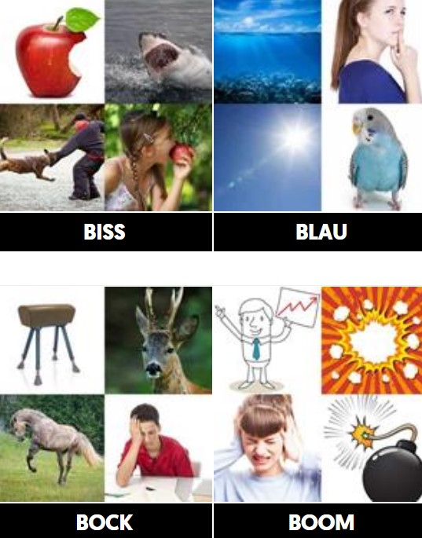

Das Spiel 4 Pics 1 Word hat einige der klügsten Spieler im Internet. Das Ziel dieses süchtig machenden Spiels ist es, das Wort anhand von vier verschiedenen Bildern zu erraten. Es ist einfach, aber nicht einfach!
Dieser Artikel listet die neuesten Antworten zu diesem beliebten Spiel auf, damit Sie nie wieder raten müssen.
Besuch 4 Bilder 1 Wort Lösungen Webseite für mehr antworten
4 Bilder 1 Wort ist ein Wortratenspiel. Es präsentiert Ihnen vier Bilder und fordert Sie dann auf, zu erraten, welches bestimmte Wort zum Thema der präsentierten Fotos passt. Es ist ein einfaches Spiel, das wirklich bei den Leuten zu klicken scheint, wenn die App Store-Charts ein Hinweis darauf sind. Es ist auch ein seltsames Spiel. Meistens sind die Themen viel zu einfach und wir sind uns nicht 100-prozentig sicher, dass dies das Original 4 Pics 1 Word ist. Es gibt viele davon im App Store, einige von verschiedenen Entwicklern.
Wie auch immer, wir haben dieses Spiel heute gespielt, weil einige wirklich tolle Typen auf Twitter gesagt haben, wir sollten es tun. Wie Sie sich vorstellen können, hatte unser Durchspielen weniger mit der eigentlichen Spielmechanik zu tun als mit dem Rätseln, warum dieses Ding so beliebt ist.
Wenn Sie ein paar Minuten sehen möchten, klicken Sie auf das Video unten. Außerdem sind wir völlig offen für Vorschläge von TA Plays, also zögern Sie nicht, einige unten zu werfen. Schlagen Sie nur nicht 4 Pics 1 Word Animal Edition oder so etwas vor, weil ich mir ziemlich sicher bin, dass wir damit innerlich nicht umgehen konnten.